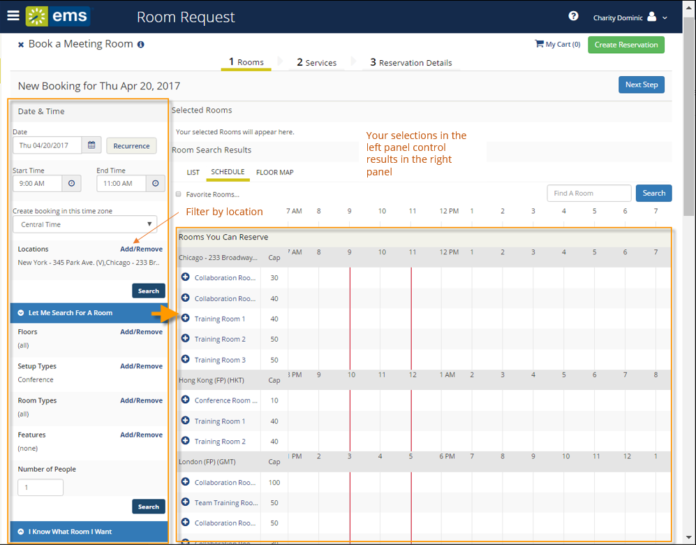
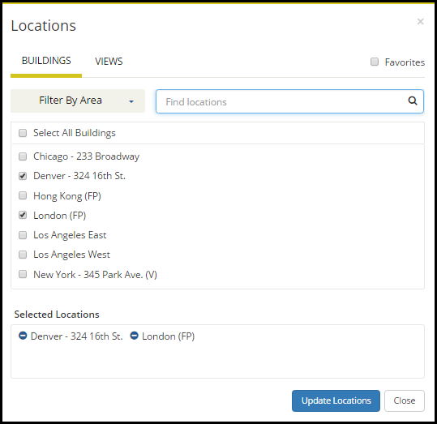

During the booking process, you can search for available rooms on the Room Request page in two ways: Let Me Search For A Room or I Know What Room I Want.
To search for available rooms, do the following:
OR

Filters in the left panel help you narrow your Room Search Results. When you click Search, results appear on the right. From these results, you can view expanded Room Details by clicking on the room name, and you can view any available floor plans by clicking the floor plan icon next to it.
You can click the Add/Remove buttons next to Locations, Floors, Setup Types, and Features to add or expand your filters. To set Favorite Rooms to use every time, see Set Favorite Rooms.
Locating space as part of the reservation process is different than browsing locations. For detailed instructions on using the BROWSE LOCATIONS option in the main menu to view available and booked space, see Browse Locations.
